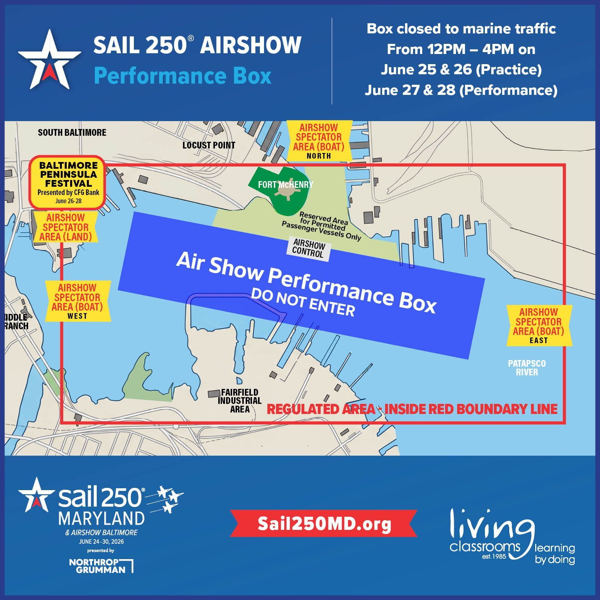

International Tall Ships
Harbor views, dockside details, rigging, flags, and skyline compositions from Federal Hill and Inner Harbor.
Sail250 Maryland
Tall Ships • Blue Angels • Fort McHenry

A full day around the harbor: tall ships, aviation, waterfront history, and sunset photography.
Harbor views, dockside details, rigging, flags, and skyline compositions from Federal Hill and Inner Harbor.
Protect the viewing window. Return early, settle in, and keep the afternoon focused on the main performance.
End the day at the Star-Spangled Banner site with USA 250 history and late-day harbor light.
Historic waterfront streets, lunch options, brick textures, boats, and candid travel-photo opportunities.
Return to Federal Hill for tall ships, city lights, and a final wide panorama over the water.
Celebrate 250 years of American independence with maritime history, aviation, and public spaces.
Sail250 has added clearer airshow safety, viewing, and transportation guidance. Use these notes with the official links at the bottom of the page.
Saturday and Sunday airshow activity is listed for noon to 4:00 PM, with Friday as a practice day. Exact aircraft timing can change because of weather and operations.
Official guidance points visitors to Baltimore Peninsula, Canton Waterfront Park, Fort McHenry information, and approved water viewing outside restricted areas.
Boaters must stay outside the blue airshow performance box. The red boundary is a regulated area and will be patrolled by the Coast Guard and law enforcement.
Parking, meeting point, harbor stops, official viewing areas, moonrise photo lines, and the recommended day route.
Recommended movement plan for the Healthy Hikers route. Build in extra time because crowding, street closures, and water-taxi queues can change the schedule.
Best: Use South Baltimore Park & Ride for free parking, Triangle Lot for a paid 10-minute walk, or West Street Garage for the shortest paid walk.
Best: Walk downhill to the promenade. Alternate: Water taxi from nearby harbor stops if service and lines look reasonable.
Best scenic option: Baltimore Water Taxi. Free bus option: Charm City Circulator Orange Route from Harborplace toward Fells Point.
Most reliable: Leave early and use the Orange Route or water taxi back toward Inner Harbor, then walk to Federal Hill or continue to an official viewing area.
Recommended: Walk or use the free Cherry Route for Baltimore Peninsula service. This is one of the official land viewing areas.
Recommended: MTA #94 or Charm City Circulator Banner Route, then walk. Do not plan on public parking at Fort McHenry.
Published windows: Friday practice; Saturday and Sunday main airshow noon–4:00 PM. Exact performer times are subject to weather and official day-of updates.
Sail250 says a complete list of aircraft and where they fly will be listed in the Sail250 app. Use the official airshow page and live narration on event day for final minute-by-minute timing.
Live Airshow Narration AudioMain headline demonstration team. Watch during the official noon–4:00 PM window; exact sequence is day-of dependent.
British aerobatic team joining the international Sail250 airshow lineup.
French Air and Space Force demonstration team in the international lineup.
U.S. Air Force tactical fighter demonstration, listed on Sail250’s airshow performer page.

The blue airshow performance box is closed to vessel traffic during the published airshow periods. The red boundary marks the broader regulated area. Green is reserved for permitted passenger vessels only.
USCG Safety BulletinHealthy Hikers SAIL250 Maryland & Blue Angels itinerary for Sunday, June 28, 2026.
Approximately a 15-minute walk to the gathering point.
Open in Google MapsApproximately a 10-minute walk to the gathering point.
Open in Google MapsApproximately a 5-minute walk to the gathering point.
Open in Google MapsStart near the Baltimore Visitor Center, then continue through Harborplace, Inner Harbor, Historic Ships in Baltimore, Harbor East, and Fells Point. Enjoy tall ships, maritime exhibits, live entertainment, and Sail250 festivities.
Meet around Broadway Square and choose from one of the many waterfront restaurants.
Arrive early to secure a good viewing location.
One of the premier events of Sail250. Bring a telephoto lens, hat, water, and an optional folding chair or picnic blanket.
Options include additional tall ships, Harbor East, Fells Point, and the Domino Sugar overlook.
If rain or heavy clouds make moon photography unlikely, the official activity ends here.
Weather permitting, dinner will be decided by the group.
Possible locations include Canton Waterfront Park, Harbor Point, and Domino Sugar Park.
Photography session featuring moonrise over Baltimore Harbor, tall ships, harbor skyline, and long-exposure night photography.
Drive home or continue enjoying Baltimore nightlife.
South Baltimore Park & Ride
1000 Hull St, Baltimore, MD
Recommended free parking. It is approximately a 15-minute walk to Federal Hill Park. Arrive early because Sail250 traffic and street closures can change access around the harbor.
If the free lot is full or the group needs a shorter walk, use one of the paid parking options near Federal Hill.
Preview the Moon path from 7:00–10:00 PM before choosing a skyline composition.
Play Moonrise Video
Use these pages for the latest event notices, performer updates, closures, and transportation changes.